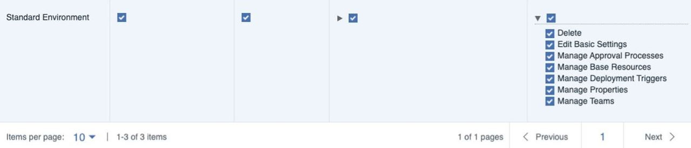
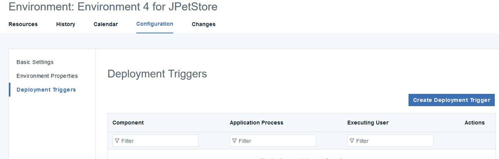

Creating deployment triggers
With the new deployment trigger feature, you can run an application process automatically on a specified environment after component versions have been added. Deployment Triggers also allow for user specification.
Before you begin
To create a deployment trigger you must have these permissions:
- Edit Basic Settings on environments
- Execute on environments
- Manage Deployment Triggers
To delete a deployment trigger, you must have these permissions:
- Edit Basic Settings on environments
- Manage Deployment Triggers

About this task
You can create deployment triggers for many components on a single environment.
You can run multiple application processes on as many environments as you want.
A deployment trigger adds strict access to running an application process on selected environment through the permission system.
Note: You cannot have duplicate deployment triggers on component, application process, and
environment. However, you may create nearly identical deployment triggers when you choose the same
component and application process with a different executing user.
Procedure
-
On the Environment Configuration page click on Deployment
Triggers.

- Click Create Deployment Trigger.
- In the Create Deployment Trigger window, select a component, application process, and executing user.
- Click Save when done.